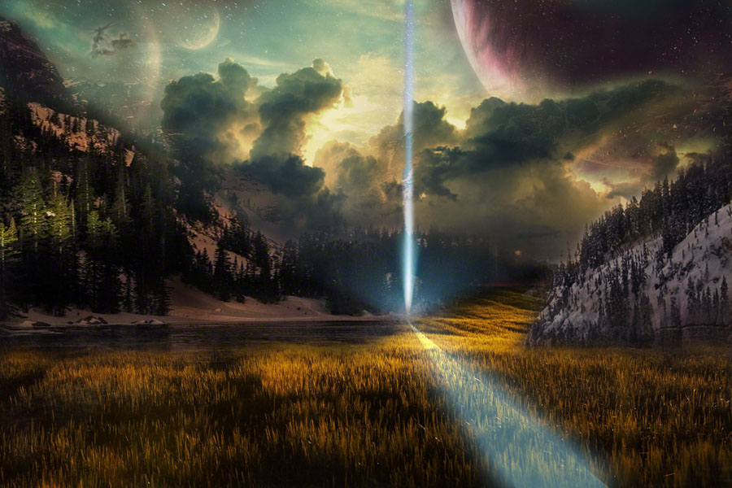
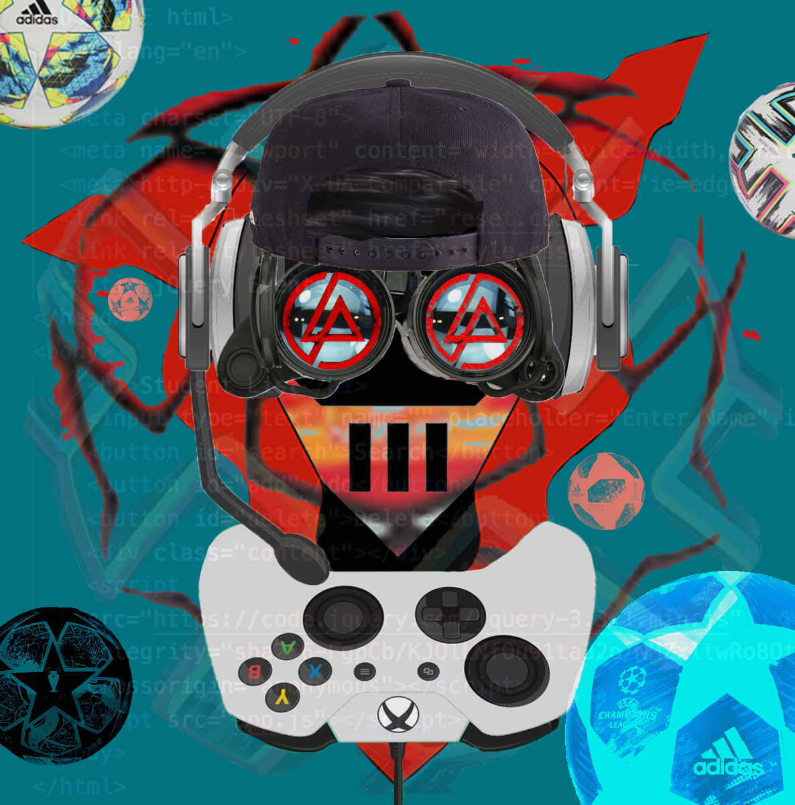
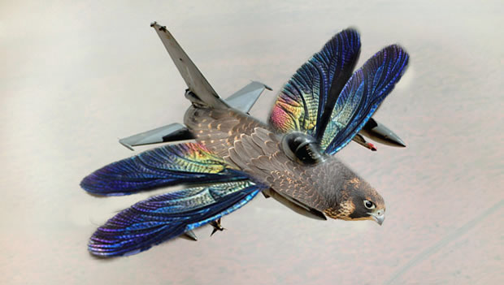
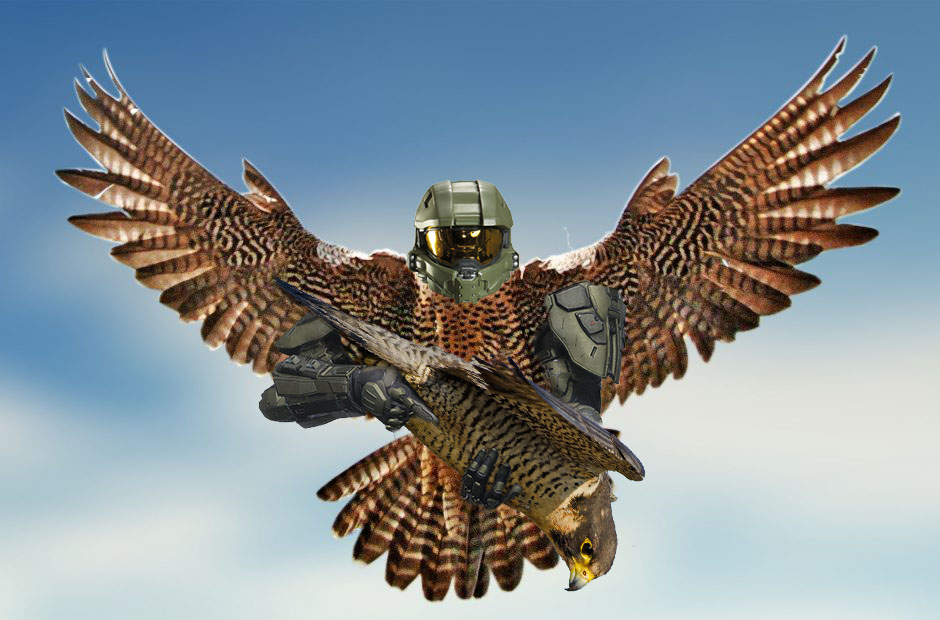

Composite Art

SkulBaldy, 807 x 1224, Composite Art, 2018
I started of with a single human face and evolved it into a face that had features of a human and an animal.

The Spartan Wonderland, 1000 x 509, Composite Art, 2019
My concept for this project was to take San Jose State to another world. So I decided to makes things that were not really real or things that usually are not supposed to be next to each other

Rokkr, 900 x 600, Composite Art, 2018
This world is a place where I think exists somewhere in the universe where the unusual is usual.

Virtual, 1186 x 1200, Composite Art, 2018
A combination of objects that represents me in the virtual world and the internet.

Battle Bird, 620 x 351, Composite Art, 2018
The first of two images of a series where I take a bird and combine it with an object objects.

Halo Bird, 940 x 620, Composite Art, 2018
The second of two images of a series where I take a bird and combine it with an object.